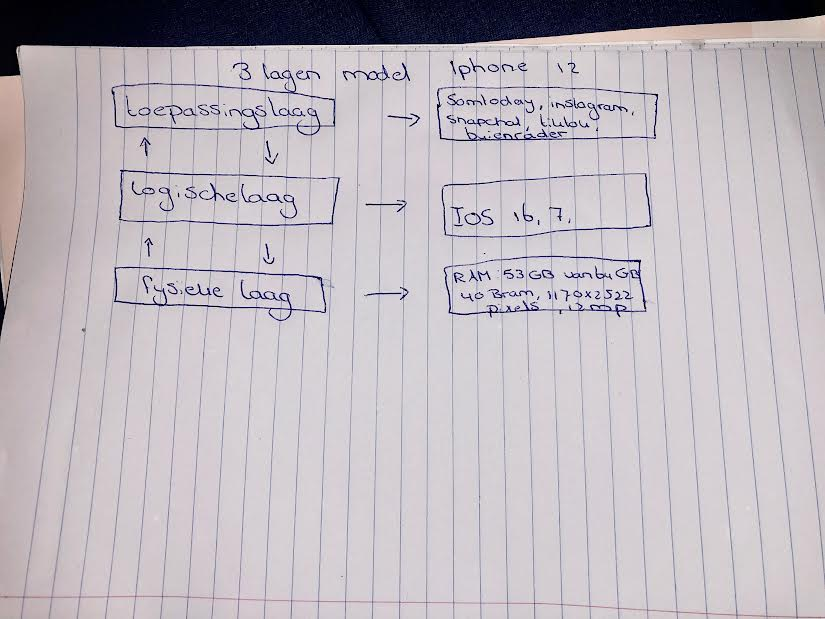

binair stelsel
3 lagen model iphone 12
Hardwarelaag of fysieke Laag:
De fysieke componenten van de iPhone, zoals het scherm,
de processor en de batterij.
Besturingssysteemlaag of logische Laag:
iOS, het besturingssysteem van de iPhone,
dat de hardware beheert en een platform biedt voor apps.
Applicatielaag of toepassingslaag:
De apps die je op de iPhone installeert en
gebruikt, die draaien bovenop het iOS-besturingssysteem en specifieke functies bieden.
Dit model helpt bij het begrijpen van de verschillende niveaus van functionaliteit
en interactie op een iPhone.
